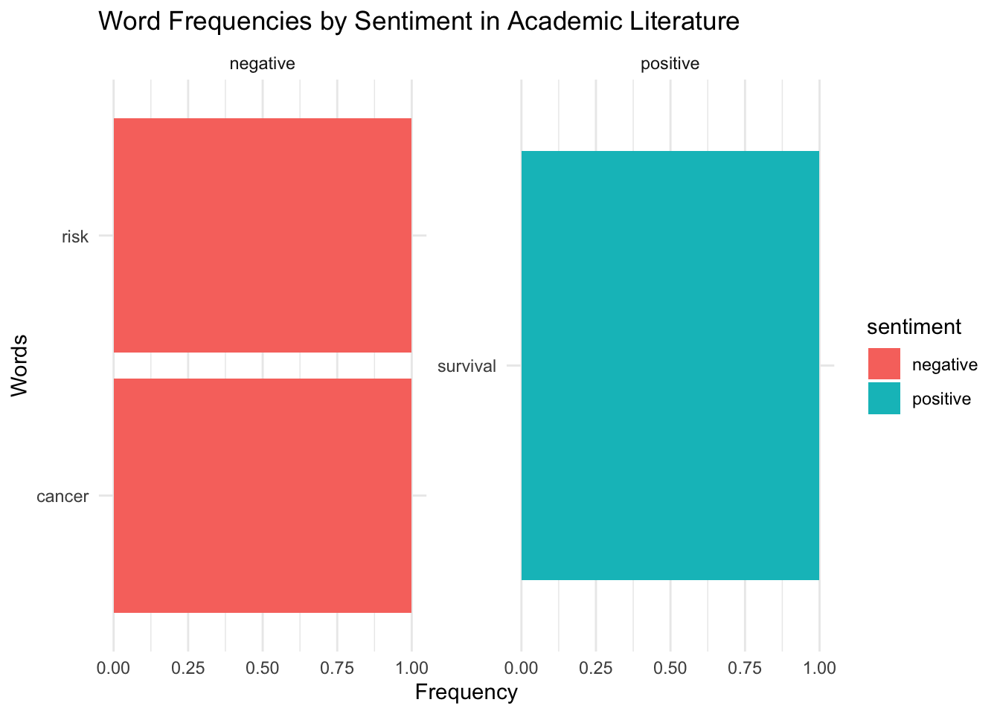
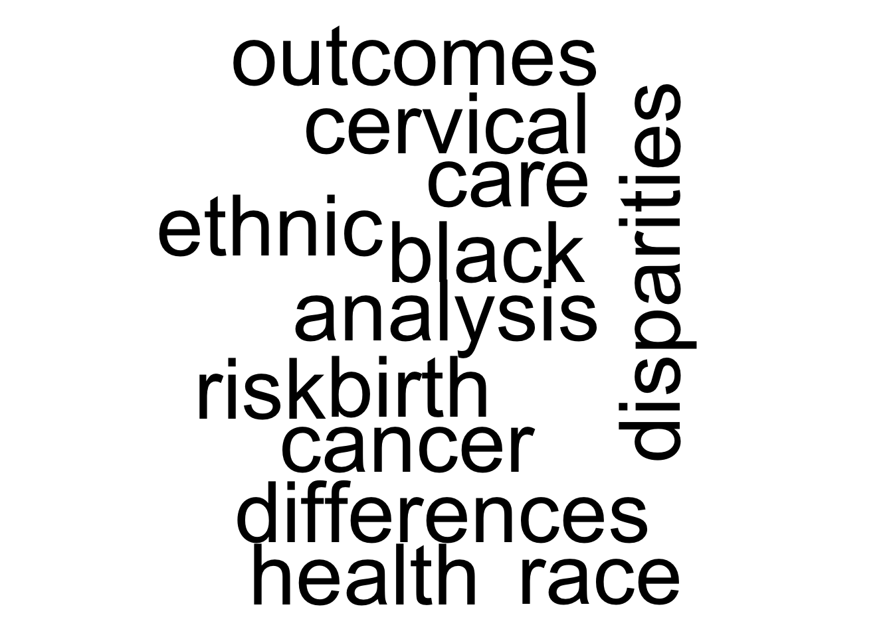
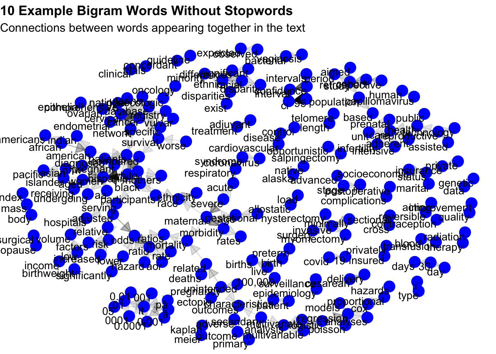

Text Analysis Project
Introduction
This project explores text analysis and sentiment analysis using a dataset of academic literature on racial and ethnic disparities in reproductive medicine in the United States. The primary goal is to develop practical skills in text mining, including the use of regular expressions, tokenization, and data visualization techniques.
The analysis begins by transforming the text into individual words (tokenization), followed by an exploration of the most frequently occurring terms. Common stopwords are then removed to focus on meaningful content. Finally, sentiment analysis is applied to classify the text as positive, negative, or neutral, providing insight into the overall tone and themes present in the literature.
Data Frame
Data Exploration
Which title is the longest and how mnany words are there in it?
| NewTitle | WordCount |
|---|---|
| A single baseline ultrasound assessment of fibroid presence and size is strongly predictive of future uterine procedure year followup of randomly sampled premenopausal women aged years | 27 |
| Impact of racial disparities on potential years of life lost due to gynecologic cancer in the United States Trends from to based on SEER database | 27 |
| Trends of racial disparities in assisted reproductive technology outcomes in black women compared with white women Society for Assisted Reproductive Technology and vs | 26 |
| Disparities in cervical cancer survival in the United States by race and stage at diagnosis An analysis of women diagnosed between and CONCORD | 26 |
| Black race associated with lower live birth rate in frozenthawed blastocyst transfer cycles an analysis of Society for Assisted Reproductive Technology frozenthawed blastocyst transfer cycles | 26 |
Does the longest title always have the most characters?
| NewTitle | CharCount |
|---|---|
| Black race associated with lower live birth rate in frozenthawed blastocyst transfer cycles an analysis of Society for Assisted Reproductive Technology frozenthawed blastocyst transfer cycles | 167 |
| Systematic Next Generation Sequencing is feasible in clinical practice and identifies opportunities for targeted therapy in women with uterine cancer Results from a prospective cohort study | 164 |
| A single baseline ultrasound assessment of fibroid presence and size is strongly predictive of future uterine procedure year followup of randomly sampled premenopausal women aged years | 159 |
No, the longest title doees not always have the most characters.
Tokenization
Tokenizing the Title Variable.
| Line | Words |
|---|---|
| 1 | desired |
| 1 | sterilization |
| 1 | procedure |
| 1 | at |
| 1 | the |
| 1 | time |
| 1 | of |
| 1 | cesarean |
| 1 | delivery |
| 1 | according |
Tokenizing the Keywords Variable
| Line | Words |
|---|---|
| 1 | adult |
| 1 | cesarean |
| 1 | section |
| 1 | cohort |
| 1 | studies |
| 1 | female |
| 1 | healthcare |
| 1 | disparities |
| 1 | humans |
| 1 | insurance |
Stopwords Exploration
Snowball
Let’s remove the stopwords above from the Word variable (title) and create a table.
#REMOVE STOPWORDS & COUNT WORD FREQUENCY
new_data3 <- new_data1 |>
anti_join(smart_stopwords) |>
count(word, sort = TRUE) |>
filter(word != "NA") |>
slice_max(n, n = 30)| Words | Count |
|---|---|
| cancer | 127 |
| disparities | 124 |
| racial | 102 |
| women | 76 |
| endometrial | 48 |
| care | 42 |
| outcomes | 39 |
| treatment | 38 |
| ethnic | 37 |
| ovarian | 36 |
Word Frequency Bar Chart

This horizontal bar chart displays the frequency of the most common words in the dataset, where longer bars indicate higher word frequency. Words such as “cancer,” “disparities,” and “racial” appear most frequently, suggesting a strong focus on healthcare, particularly in oncology and health disparities. Because the chart is flipped, the word labels are shown on the y-axis, while the frequency values are displayed along the x-axis. This layout makes it easier to read longer words and compare their frequencies visually. Overall, the distribution highlights a clear thematic emphasis on cancer research, patient outcomes, and demographic disparities, providing insight into the primary topics present in the literature.
Let’s Explore The Bing Sentiment Lexicons
| Words | Sentiment |
|---|---|
| 2-faces | negative |
| abnormal | negative |
| abolish | negative |
| abominable | negative |
| abominably | negative |
| abominate | negative |
| abomination | negative |
| abort | negative |
| aborted | negative |
| aborts | negative |
Implement Sentiment Analysis with the BING
Are titles more positve, negative, or neutral?
Data Table
| word | n | sentiment |
|---|---|---|
| cancer | 127 | negative |
| survival | 36 | positive |
| risk | 27 | negative |
First: Let’s visualize with bar chart

This faceted horizontal bar chart illustrates word frequencies categorized by sentiment in academic literature. Words associated with negative sentiment, including, cancer, risk, severe, appear in the left panel, while words associated with positive sentiment, survival, appear in the right panel. Bar lengths indicate relative word frequencies. The word that contributes the most to the sentiment scores for these titles is survival. All three terms—risk, cancer, and survival—show a maximum relative frequency of \(1.00\) within their respective sentiment categories.
Second: Let’s Visualize Using Wordcloud.

This word cloud visualizes the most frequently occurring terms in the literature dataset. The size of each word represents its frequency, making the most dominant themes immediately apparent. The largest words—including analysis, birth, black, cancer, and, risk, indicate that these are the most prominent terms in the text. Words are arranged in both horizontal and vertical orientations to create a compact thematic summary.
N-gram Analysis with Abstracts
First: I will begin by breaking the abstracts into bigrams, and the table belo is just showing only 10 example bigrams.
| Linenumber | Bigram |
|---|---|
| 1 | to evaluate |
| 1 | evaluate whether |
| 1 | whether women |
| 1 | women with |
| 1 | with medicaid |
| 1 | medicaid are |
| 1 | are less |
| 1 | less likely |
| 1 | likely than |
| 1 | than their |
Second: Check the most common bigram
| Bigram | Count |
|---|---|
| 95 ci | 502 |
| in the | 384 |
| non hispanic | 330 |
| white women | 289 |
| black women | 277 |
| compared with | 273 |
| associated with | 272 |
| p lt | 267 |
| confidence interval | 262 |
| 95 confidence | 255 |
The most common bigram is “95 ci”, which occurs in a total of 502 times.
Third: Remove Some of the Stopwrods From the Bigram Column
| Linenumber | Bigram |
|---|---|
| 1 | single baseline |
| 1 | baseline ultrasound |
| 1 | ultrasound assessment |
| 1 | fibroid burden |
| 1 | burden presence |
| 1 | predict future |
| 1 | future probability |
| 1 | major uterine |
| 1 | uterine procedure |
| 1 | major uterine |
Fourth: Creating a Network Graph From the Bigram

This is a directed network graph illustrating common word pairs (bigrams) within the dataset. Each green node represents a unique word, while the arrows indicate the sequence and directional relationship of phrases appearing together in the text. The density of the arrows reveals thematic clusters, most notably a central focus on racial and ethnic disparities and a secondary cluster focused on maternal health and obstetric outcomes. Larger connections represent more frequent word pairings.
Reference
- Academic Literature on Racial and Ethnic Disparities in Reproductive Medicine in the US. see the source here
- Stopwords: online source
- get_sentiments(“bing”) R Package
- Sentiment: online source